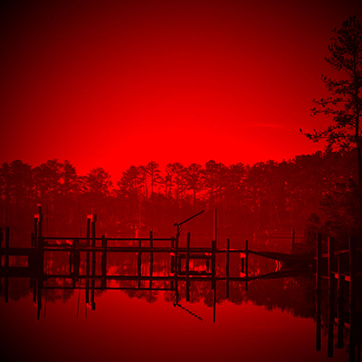

Mr.J
By Mr.J
It was on a winter’s evening after I was awarded a disabled chicken that I left to kill the dragon. The runt of Hawk the Butcher’s personal stock of hens, it had a crooked neck and bristled feathers as if its life had been in a permanent fight, there was no meat on her at all. Hawk let me have it all the same, he had made a lot of money that day. I dragged the animal back by its neck through the streets, resigned to its pathetic fate she barely protested.
My son was waiting outside, perched on a rotting log like a dead animal. He had mud in his hair. I strung the chicken up and trudged passed my child without a word to fetch my knife. He did not look at me, simply staring into the distance with little balled fists. I could hear my husband gurgling in the bedroom, I would deal with him later. He was probably just hungry.
Taking the bird again I pressed her against a mouldy wooden bench and ended her existence with a thump of my heavy knife. Blood gushing from the tiny neck the head topple sadly to the ground, beak open as if gasping for air. I kicked the head into the grass and strung the chicken up again.
The child kept looking at me. There was no love in those eyes. He would sit and stare and pout with his young face, following me around the house with his silent disgust. He hated my sullen house, the grey walls of mud drooping into the blackened straw at our feet, he hated his father was bedridden and silent like a statue, a pale and artificial figure, I suspected he hated me too.
It was not the absent love of my own child that drove me to the mountain, or my husband turned to an empty husk. They were the catalysts, but I did it for my own glory. I have told others of my brave deeds to rescue my starving child and ailing husband from the grip of our rotting home, but I fear they will see the truth quivering behind my eyes. I went to be a hero, I went to rescue myself, I went to kill a dragon.
My boy. A sandy haired scrubby thing, white as chalk with a bulging skeleton seeping through his thin skin. Every time I tried to wash him I had to bite my lip to restrain myself from crying at his half-formed body. A boy of ten should not be this small, malnourished and weak. He would begin that tumultuous growth into a man soon, I could not fathom how to feed his even greater hunger, his new boiling emotions and the expected beatings from the other larger boys of one so small and weak. I could blame my husband. A loose overhanging rock could have fallen and hit anyone on the head in those mines. I could blame him but I do not. It could have happened to anyone. It just happened to be him.
My own payment slaughtering pathetic animals at the butchery was not enough to feed three. The little I could muster from my work was eaten grudgingly, my son staring into the distance with foggy eyes as he shoved watery liquid stained with gristle and bad meat down his veiny neck. I would take the final bowl to my husband, lean on the bed and shovel it down his neck, squashing his mouth shut so it wouldn’t dribble down his chin like a baby. Trudging through the town in the encroaching dark with arms trapped in a layer of dried animal blood, forehead sweating and stained with dirt, the fear of returning to my family home would ripple down my spine again. My son would watch me stumble through our creaking door without a greeting, dark eyes disappointed yet again. He had stopped trying to hide it.
After he had gone to bed, nestled against the icy skin of his former father, I prepared myself. Everyone spoke of the dragon, everyone knew there was a reward from the Duke if it was killed. No one had seen it since we were children, the old ones nodded wisely with their stories. Stories was all we had of the dragon. How it ate all of the livestock, starved the town. How it set farms and crops on fire for amusement, how it laughed as it did so, how it spoke to lost travellers and assisted them to safety before eating them idly. How it was fat and bulging and stole money, it was hibernating now in a slumber on its pile of accumulated wealth.
I did not believe the stories. What would a dragon want with gold? Animals couldn’t speak, that was resigned only to fairy tales they told us as children. The elder minds were so addled they had merged fiction and reality. But we all knew it existed, there was evidence of its power still scarred against the land. The reward was also very real.
I took my husband’s leather jerkin, furs and heavy boots. His thick cloak that stank of dust and a long starched walking stick to help me through the mountain.
The paths were steep, rocky and layered in black ice. I fell several times, nails cracking against stone, fingers bleeding from sharp edges, bruises peppering my sore legs and arms a dark purple. I occasionally turned my frozen face to the misty expanse below, my home an invisible speck among the mass of houses. A melancholic clump of humanity nestled into the rocky environment, we clawed for our living in this part of the world. I waited for the wind to stop tearing at my skin, face so numb to the cold I felt as if I were living in a shell, looking out at the grey and white world through a mask of dead flesh.
There was steam rising from above. My dead senses flaring into life again, nostrils burning with the stench of stale blood and a metallic odour that stung my eyes. Water dripping from my cheeks and freezing into ice from the wind I hurried forward to the strange sight. As I entered the grey cloud billowing from beneath me I could see through the fog a dark black creature leaning against a crevice. Its legs were spread awkwardly underneath it, head pushed painfully into the rock, titled and staring at nothing. If not for the steam pumping from its blazing nostrils I would have presumed it was dead and rotting. Despite the few signs of life I was too terrified to move.
It is at this moment where my story lies. I recount in my tale of bravery that the dragon mocked me for my stealth, stirring its elongated legs from its slumber and attacking me before I cleverly sliced into its neck with an axe. A weapon I had stolen from Hawk. But I will not lie to you reader. My breath was empty and stomach churning in pain as I clambered down that rock face to the comatose creature. As I drew closer the stench hung heavy in the air, humid and foul. I could see its hard crackling skin was fading to a prickled whimper. As I sliced into its neck with my axe the eyes moved to my tiny figure. She did not lift her head, she thanked me with watery eyes, closing them for the last time.
I sliced off a foot and one of the last shining scales as a reward. I felt no victory, I felt rotten and empty. I was angry at the world. I did not notice the journey down the mountain, I trudged one foot at a time, my mind lingering on the sad creature. It must have lain there for years in suffering, waiting for death, pleading someone would take it from her. I wanted to crawl into a ball and hug her, press a hand against her claw and hold its last thoughts from this world into the next. This image has plagued my mind ever since. My sadness and anger at its fate, snapping at others for no reason, silently demanding to know why they never helped it. It was the stories, they stole its life and cloaked it in an invisible lie of suffering. I hated them the most.
But this is not the end of my own story. I only wish it was. But I returned to my home, my child was not waiting for me. He was cross legged at the end of my bed, the butcher knife resting in his open palms, soiled and blood dripping between his fingers to the floor. A long deep slice into my husband’s throat, his face was stained red and head titled to one side, eyes bulging white in a glassy horror.
My son never looked at me again.
m3mnoch
By m3mnoch

Winter Regrets
Sap swelled and snapped limbs as a harsh, wintry wind sheared through the treetops. The morning sunlight reflected painfully off the drifts, but did little for warmth. As she rested, clouds of steam surged from her lips, only to get swept aside by the next whistling gale.
Her stomach growled and there it was again. The flick of movement. The glint of a round eye. The twitch of a whisker.
She leapt. Snow and dirt erupted in a shower of debris.
Powder snow drifted in the wind as rocks and twigs rained down. A brown, earthy scar marred the whiteness where her target had been. Her stomach growled again.
There was no food. There hadn’t been for days. She needed meat.
She needed to find another bear.
The cave had been well-hidden and out of the wind, but that meant the snow was not able to pile in front of the entrance. She had found it.
The bear had roared and charged her instantly. She had swatted it through the air to crash into a pine tree. The bear had rolled to its feet, shaken, and stood on its hind legs for a second attack. She had reached down and snatched the animal’s skull in one massive paw and had torn it free.
She had fallen on the still-warm corpse with a ravenous hunger, tearing wolfishly at the flesh with fangs the length of the bear’s forearms. Most of the meat had disappeared in seconds.
That was when she had heard the cubs. The bear’s children had rushed her. They had charged from the mouth of the cave where they had been hibernating, snarling to protect their mother.
Heart sinking, she had fled.
In that moment, she could not have taken the cubs as the wolves had taken hers. Now, she was not as sure. Given the choice between another day of cold starvation or devouring bear cubs, the mother in her feared the finding of another cave.
The wolves were different. She longed to find the pack. She’d been hunting them for half a moon. She would feast, swift and ferocious amongst them, alphas and cubs alike.
Stacks of bones and piles of fur, torn earth and shredded trees. Violence and warmth would follow her vengeance.
She snarled.
Growls thundered from her empty stomach in response. A gust of wind hurled a flurry of snow in her eyes. Snorting, she shook her head and emptily padded on.
Nine heartbeats and she paused.
White fur flashed from the corner of her eye. She roared and pounced. Huge, sweeping claws again ripped up the earth surrounding the rabbit hole. Again, she was not quick enough. While no creature alive could pace with her in an open run, the darting speed required to spear a rabbit on her claw was beyond her. She was too large. Worse, hunger and weakness seemed to be making her even slower.
Another whipping gale froze along her rippling back. This one, however, carried a new scent.
Cattle.
That meant a man-village was nearby and men were dangerous. Far more so than wolves.
Even a full pack of wolves was easy meat for her. A pack of men, however, would destroy her. They posessed unending hordes of biting razors and sharp sticks. There was a reason she had lived as long as she had — She avoided men.
But, she was so hungry.
With the strength from one quiet cow, taken under the moon, she could finally catch and devour the pack of arctic wolves she’d been chasing all these long cycles. The men would never know. If she found any of the man-fenced grazing fields, she promised herself she’d wait until nightfall before she moved in and started plucking up cows.
She thrust her snout skyward. What luck! The man-village, the cattle, and the wolves were all in the direction of the rising sun. She might catch a wolf or two prowling around the man-village, and if she came upon a fat cow lost in the fields, she would snatch it up as she ran.
A rumble rolled from her belly up through her throat. Yes, cows were delicious.
Looking around at the destroyed rabbit holes, she scoffed and rustled the trees. Then she stood, confident, and started loping, the morning sun in her eyes.
After a league or two, the scent grew stronger and she slowed her pace. She was hunting. Quiet and careful. The wolves must not sense her until she was upon them.
Ahead, she spotted a small clearing. The facing sun reflected off the snow and it was difficult to spot the wolf moving about, rustling in a pile of small sticks. It was probably nosing around in a rabbit den. Hopefully, the wolf would catch the rabbit — That meant double meat for her.
She crept forward.
There were no other wolves in sight. This one was alone, but knew others were not far. She found their faint scent blowing through the trees. A long string of drool dangled its way from her jaw to the ground below.
She was getting closer.
When this one darted, she would concentrate and follow only this one. Once she gulped it down, then she would pick another from the pack and run it down. Then another, and another, and another. She would not be distracted as they scattered.
Her stomach rumbled. The wolf’s head popped up.
There was a strange smell coming from beneath the wolf, but it was about to dart. She didn’t have time to ponder whatever prey the wolf had taken down. Hunger pushed her.
She pounced, jaws snapping the wolf in half.
The fireplace flames in their little cottage burned low and the outside chill seized on the moment to seep in to Adax’s knees. He pulled the blanket tighter and wondered what was taking his son so long to bring in more firewood.
Irritated, he finally stood and stretched, working the imprint of the wooden chair from his bones. He looked at the empty hanging peg by the door, grunted and wrapped the blanket close, bracing for the cold outside.
Adax stepped across the threshold and out into the snow. There was a fierce wind blowing and the blanket did little to guard against the sharp cold. He followed Dav’s tracks in the snow from under the eaves and out to the small shed where they stored the firewood.
It was empty.
It was empty of both firewood and of his son, Dav. Worry niggled in the back of Adax’s mind. He pulled the blanket tighter and followed the small bootprints to the fence surrounding the cowshed.
As he walked, one of the milk cows nibbling the last of the shoots surrounding a fencepost lifted its head in the air. It snorted, whined, and trotted back to the safety of the shed.
The wind whistled again and Adax worried. Steeling himself, he started jogging alongside the boy’s tracks leading to the nearby woods where they typically had harvested their firewood.
“That boy should know better than to head out here in the cold by himself.” He tried to replace the growing fear with anger. “So help me, if he’s gone and torn my good cloak on some sharp branch, I’m going to use his hide for my next one.” But at least he’ll be warm, wrapped in the wolfskin.
A tree-shaking roar echoed with furious anger through their little valley. Adax stopped and covered his ears but still felt the rage-filled rumble deep in his own chest. After three heartbeats, it was followed by a wailing howl, long, slow, and mournful. The sadness drowned the shrieking wind before slowly dying along Dav’s tracks.
Adax’s face rippled with dread. His stomach lurched and he flung the blanket to the side. He wished he’d brought his axe, but whatever horror he was about to face, his own teeth and knuckles would have to suffice.
Adax ran.